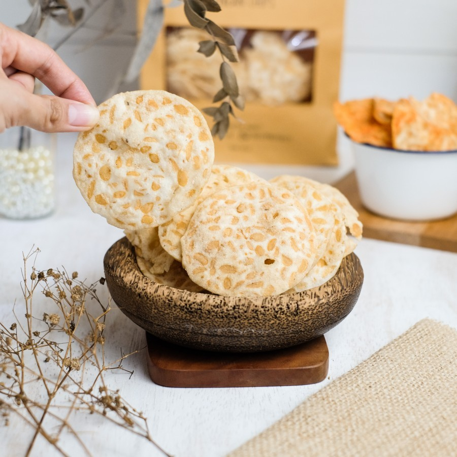
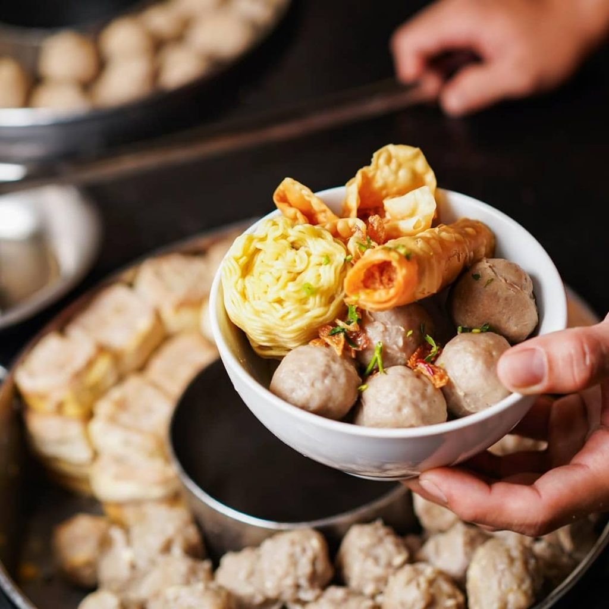

Local Food

Rujak Cingur
A local food consisted of vegetables, menjes, lontong, tahu, and the main ingredient, cingur. Cingur itself is beef lips that are processed in such a way that they are not fishy and so chewy when eaten.
Keripik Tempe
Crispy chips made from dried tempe. Usually consumed as a friend to eat or eaten just like that.


Bakso Malang
Food made from ground beef and then shaped like a ball, then boiled. A bowl of bakso servings usually contains several bakso, gorengan, and bihun or mie kuning.